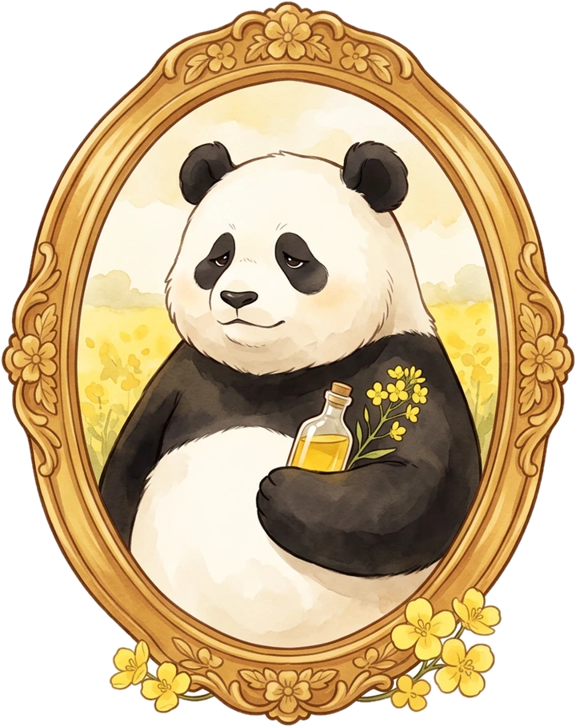

Step 01
Harvest
The stalks are cut when the pods rattle dry on the stem. Our pandas gather them by hand along the field edges and carry them home in baskets.
Harvest window · July

Pressed in the valley since 1753

The quiet craft of the press
From the yellow of the fields to the gold in the bottle. Seeds, patience and a little pressure, and nothing else.
Pandaseed Oil · Brassica napus L.
Production


Step 01
The stalks are cut when the pods rattle dry on the stem. Our pandas gather them by hand along the field edges and carry them home in baskets.
Harvest window · July
Step 02
Only fully ripe seed from a single variety goes through the mill. Sieving and winnowing take out dust, husk and stones, which keeps the flavour clean and the oil stable.
Seed moisture · under 9%
Step 03
A slow lever press squeezes the seed by force alone. No added heat, no solvents, so the vitamins and the nutty seed aroma stay in the oil.
Press temperature · below 40 °C
Step 04
The fresh oil rests, settles and runs through cloth. Every batch is held to the light, tasted and checked before a single jug is sealed.
Every batch · tasted & tested
Yet have you ever wondered where, inside the seed itself, this liquid gold is kept?
An average rapeseed is roughly 40 to 45 per cent oil by weight.
Most of it, over 90 per cent, sits in the endosperm, packed into microscopic oil droplets.
The oil is fuel. It feeds the seedling until its first green leaves can photosynthesise.
A thinner reserve of oil lies in the aleurone layer wrapped around the endosperm.
About 20 to 25 per cent protein, plus fibre in the hull, water and carbohydrates.
Fact 1 / 5
Health facts

2 : 1
Omega-6 and omega-3 sit at roughly two to one, a closer balance than most cooking oils offer.
≈ 7%
The lowest share of saturated fat among the common kitchen oils, with plenty of heart-friendly unsaturated fat.
2.4 mg
Natural tocopherols act as antioxidants, protecting both your cells and the oil itself from going stale.
≈ 9%
One of the richest everyday sources of alpha-linolenic acid, the omega-3 your body cannot make on its own.
Sterols
Used in place of butter or lard, Pandaseed Oil helps keep LDL cholesterol in check.
≈ 180 °C
Cold-pressed oil suits dressings, baking and medium-heat cooking. Keep the smoking hot pan for refined oils.
Typical values for Pandaseed Oil. Natural products vary from batch to batch.
Our oils

The everyday bottle. Pressed from single-variety seed, gently nutty and light enough for dressings, sautéing and baking.

Left to settle and never filtered. Naturally cloudy, with a deeper seed flavour and a green, peppery finish. Best raw over warm vegetables.

Seed from one hillside farm, pressed within a week of harvest. Stoneware keeps out the light, and the taste carries the soil it grew in.

Only the oil that runs before full pressure is applied. Pale, floral and delicate, made for finishing a dish rather than for the pan.

Pressed once a year on Bao's original lever press from an heirloom seed. A deep amber oil, resinous and rich, kept for slow evenings.
01/ 05
But wait! Who's Bao?

Who's Bao?
In the spring of 1753 a young panda named Bao wandered out of the bamboo and into a valley gone yellow with rapeseed. He cracked a seed between his teeth, liked the nutty taste, and built a lever press from fallen timber by the stream.
The oil he poured that summer was slow, golden and clean. Word travelled down the valley, and other pandas came to help with the harvest, the sieving and the long hours at the lever. That small crew became Pandaseed.
Bao's initial is still pressed into every wax seal, and the pandas still work the way he did: by paw, without heat, one batch at a time. His name is signed at the foot of the oval badge, and on the label of every Reserve bottle.